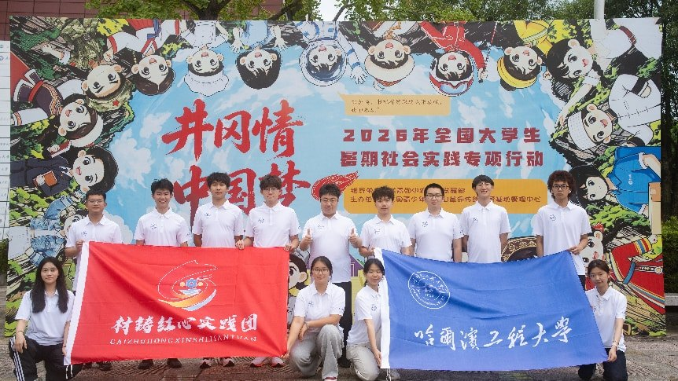
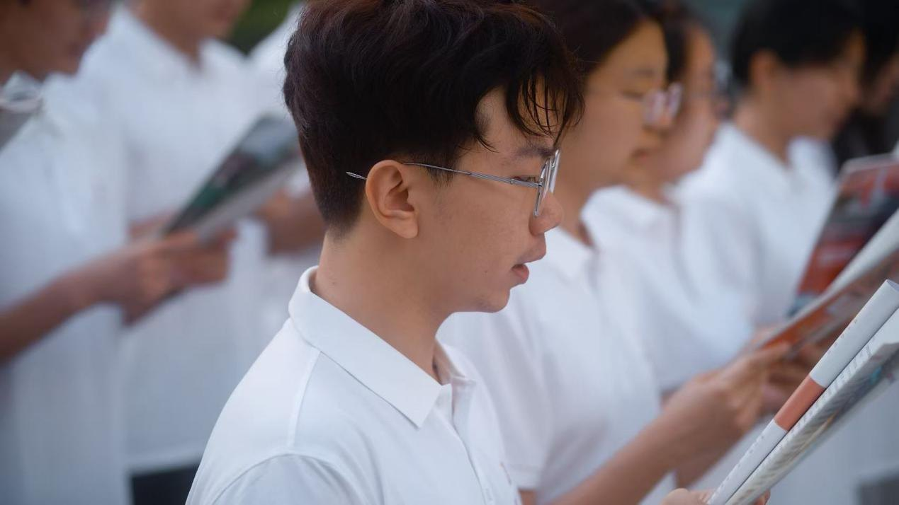
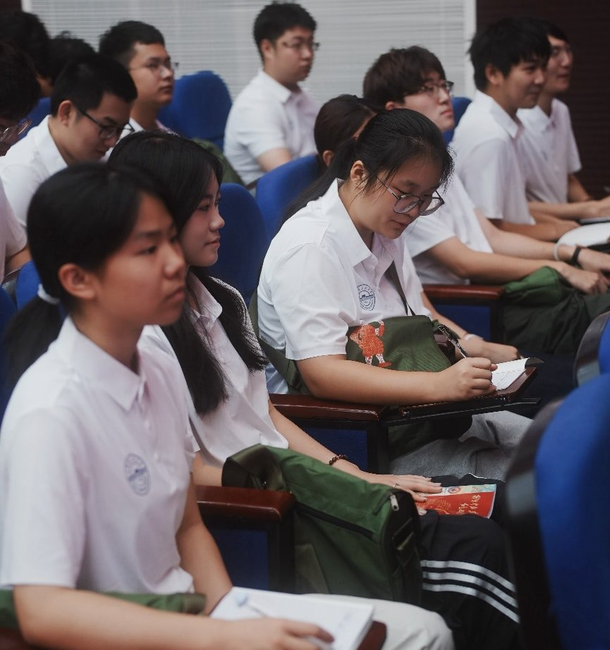
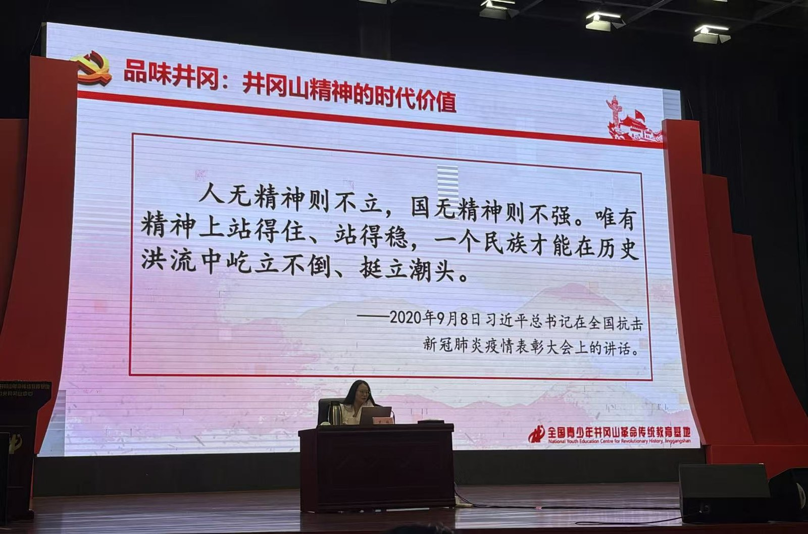
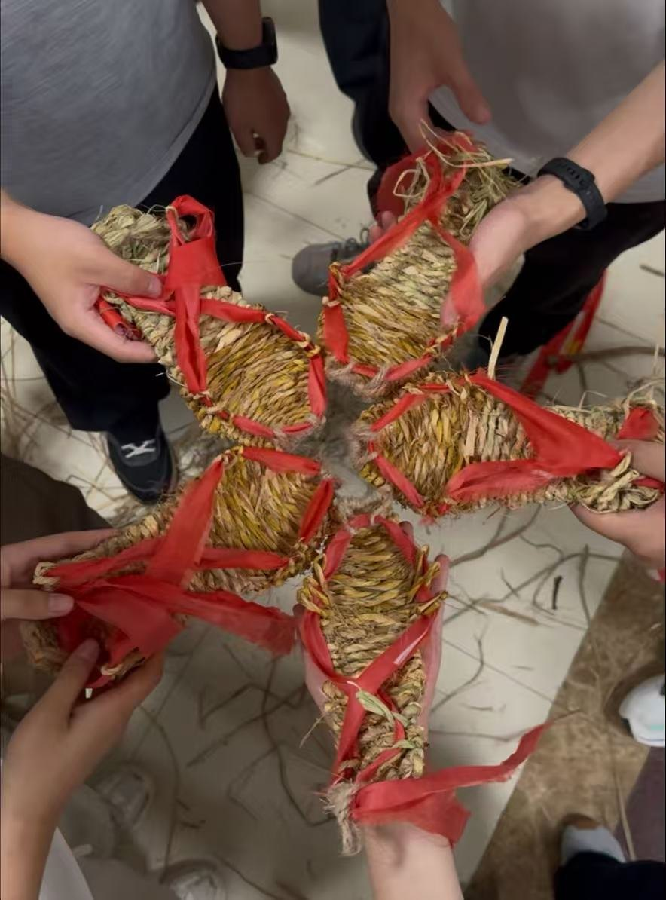
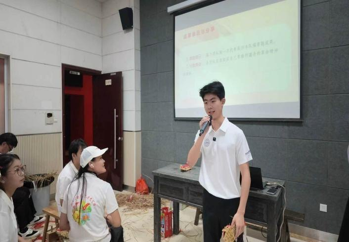
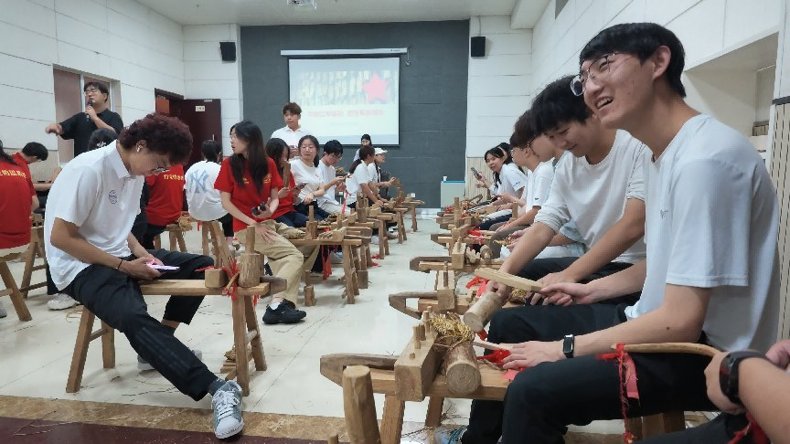
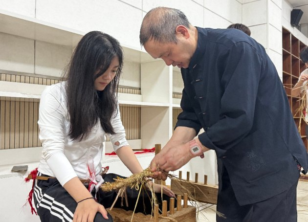

井冈山实践纪实 · DAY 2
草绳织就先辈路，青春奔赴十五五
“材铸红心”实践团井冈山实践纪实

为深入学习贯彻习近平新时代中国特色社会主义思想，传承红色基因、赓续精神血脉，引导青年学子在学思践悟中坚定理想信念，哈尔滨工程大学材料科学与化学工程学院“材铸红心”实践团赴井冈山参加2026年“井冈情·中国梦”全国大学生暑期社会实践专项行动，深入研学井冈山精神与哈军工精神的内在联系。
晨间砺行 · 晨读晨训启新
清晨朝雾漫山，星火初心不忘。“材铸红心”实践团以例行的晨读拉开了第二天实践学习的序幕。以晨间淬炼唤醒精气神，用文字诵读筑牢红色根基，大家在清爽山间晨光里，提前做好全天理论学习的思想准备。


理论领航 · 深学“十五五”蓝图
上午九时，团中央井冈山中心党委委员、纪委书记高亮老师于一号报告厅带来专题教学《以有为青春奋进“十五五”——党的二十届四中全会精神暨“十五五”规划纲要解读》。
课堂上，老师立足国家发展大局，清晰梳理二十届四中全会核心要义，细致拆解“十五五”规划纲要中关乎青年成长、科创发展、基层建设的重点内容。结合当代大学生社会实践、专业发展、使命担当展开分享，引导全体学员认清时代发展大势，找准青年奋斗坐标。
实践团成员们认真记录要点、主动思考提问，深刻意识到青年学子当紧跟国家规划步伐，把个人理想融入国家长远发展，以实干青春书写时代答卷。

溯源历史 · 感悟井冈山精神
下午二时三十分，一号报告厅内，罗曦老师带来《井冈山斗争与井冈山精神》专题党史课程。
从秋收起义到井冈山会师，从茅坪八角楼的星火到黄洋界保卫战的凯歌，老师以详实史料、鲜活革命故事，带学员们回顾了井冈山两年零四个月的艰苦斗争历程。围绕“坚定信念、艰苦奋斗，实事求是、敢闯新路，依靠群众、勇于胜利”二十四字井冈山精神深度剖析，还原革命先辈在物资匮乏、强敌环伺环境下坚守信仰、开拓革命道路的动人过往。
在场成员沉浸式回望峥嵘岁月，真切读懂了井冈山斗争中的青春使命与时代回响，深刻领会跨越百年依旧鲜活的井冈山精神内核。
沉浸式体验 · 手编红军草鞋
夜幕降临，晚七时，学员们步入综合楼教室开启沉浸式体验教学，由基地老师和当地草鞋师傅带领全体学员学编红军草鞋。
老师先讲述草鞋背后的革命故事：当年红军战士身着草鞋踏遍井冈山千山万水，一双简陋草鞋承载着不畏艰难、吃苦耐劳的革命底色。随后由草鞋师傅分步示范草鞋编织手法，手把手指导大家系腰弓、搓草绳、编织鞋面。
稻草粗糙磨手，反复缠绕编织更是考验耐心，不少同学手上泛红却依旧坚持。“材铸红心”实践团成员陈锦池以“理想信念指引前行道路”为主题发表了自己的心得体会。各位实践团成员通过这次体验教学，深刻领悟了红军步履不停、永在路上的初心传承，在手工实践中完成一次直击内心的红色洗礼。



